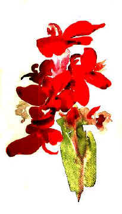
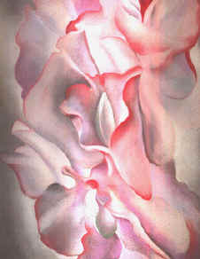
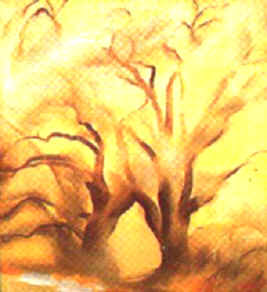
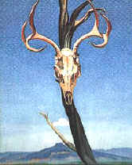
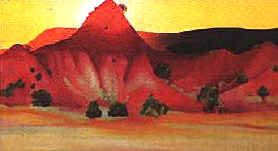
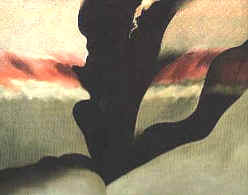
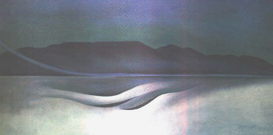

| ||||
A page by George Kringelbach, DK
It is a particular pleasure for me to
contribute this page also to PASIC
(Paintings and Arts on Stamps Internet Club), as a tribute to modern
American art in opposition to the classical arts being prevalent on
PASIC's pages.
In spite of the fact that Georgia
O'Keeffe is widely considered by critics and art historians to be one of
the most important American artists of the 20th century, the USPS up to
now only issued one stamp featuring one of her well-known flower
paintings. The stamp is shown immediately above, top right, and was
issued in 1996, ten years after her death. The title of the art work
is "Red Poppy".
Instead of displaying colourful stamps I
would therefore like to show a selection of her paintings, hoping that you
will like them as much as I do. Please point your mouse to the
images for additional information.
|
 |
|
Georgia O'Keeffe mastered all medias available; watercolour, pastel, oil. Her early works are mostly watercolour or pastels, and are considered school works. Only her late works are painted in oil, with which one can really make wonders in fading out or emphasizing colours so that they come as close to nature as possible.
|
 |
 |
The above work "Red Canna" is a watercolour belonging to the Art Gallery of Yale University. Together with the two works in pastel and oil respectively, all of an almost organic appearance, they display her talents perfectly in different media of totally different nature.
|
 |
 |
 |
The painting to the left juxtaposes two
forms that O'Keeffe came to know well in New Mexico: An animal skull that
she probably found in the desert and the Pedernal, the flat-topped
mountain that dominates the view to the south from her Ghost Ranch
house.
The brilliant colours found in landscape
forms (middle) near O'Keeffe's Ghost Ranch house in New Mexico inspired
many of her paintings of the 1940s.
O'Keeffe was fascinated by an area of
grey black landscape forms in the Navajo country (right) of northwestern
New Mexico that she discovered in the 1940s and made it the subject of at
least twelve paintings.

This page can be concluded by nothing else than a painting from Ms. O'Keeffe's much beloved Lake George, whose solitude and wild nature she depicted on numerous paintings throughout her life.
|
Sources:
|
Personally I would be more than pleased to see one or more of Ms. O'Keeffe's paintings of which the clear colours and nearly graphic nature are so well fit for being reproduced in small format on stamps. Let's hope that the USPS-officials will visit this page and have inspiration for future stamp issues.